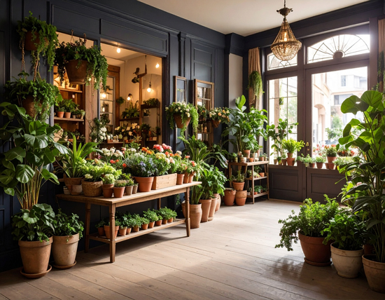
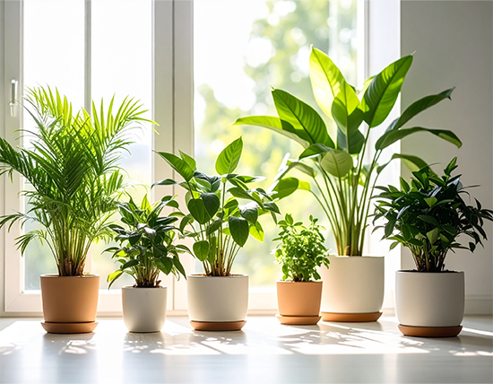

わたしたちが大切にしていること
verdé（ヴェルデ）は、観葉植物とインテリアを通じて、心豊かな暮らしを提案するグリーンブランドです。
私たちは、ただ植物を「飾る」のではなく、植物と向き合い、共に暮らしていく時間そのものを大切にしています。
植物のある暮らしは、ふとした瞬間に呼吸を整え、心をやわらげてくれる。そんなささやかな変化が、日々の中にあることの豊かさだと信じています。
サスティナブルな素材選びと、長く付き合える植物のご提案を通じて、verdéはお客様の“ていねいな暮らし”をお手伝いします。
店舗情報
実際に見て、触れて、選べる安心を。
verdéの実店舗では、季節ごとの観葉植物や鉢、インテリア雑貨をご覧いただけます。スタッフによる植物の育て方アドバイスや、グリーンコーディネートのご相談も随時承っております。
店内はゆったりとした空間で、お子様連れや初めての方でも安心してご来店いただけます。
所在地
山口県みたか市東町1-2-3
営業時間
11:00〜18:00
定休日
水曜・第2木曜
アクセス
合妻駅から徒歩7分／駐車場2台あり

おしらせ
2025年6月17日
サマーセール開催中!〜7月31日まで
夏のインテリアにぴったりの観葉植物を特別価格でご提供！
・モンステラ 20%オフ
・サンスベリア 15%オフ
・フィカス・ウンベラータ 10%オフ
この機会にぜひグリーンをお迎えください。
・モンステラ 20%オフ
・サンスベリア 15%オフ
・フィカス・ウンベラータ 10%オフ
この機会にぜひグリーンをお迎えください。

2025年6月15日
新入荷のご案内
今週は人気の観葉植物が多数入荷しました！
・ベンジャミン（フィカス・ベンジャミナ）
・パキラ（発財樹）
・エバーフレッシュ
・レインボー・ユッカ（斑入りユッカ）
店舗・オンラインともにご覧いただけます。お早めにどうぞ！
・ベンジャミン（フィカス・ベンジャミナ）
・パキラ（発財樹）
・エバーフレッシュ
・レインボー・ユッカ（斑入りユッカ）
店舗・オンラインともにご覧いただけます。お早めにどうぞ！

よくある質問
- 初心者でも育てられる植物はありますか?
はい、育てやすく、環境に順応しやすい植物を常時ご用意しております。お客様のライフスタイルに合うものをご提案します。
- 購入後の育て方がわからなくなったらどうすればいいですか?
ご購入後のフォローも承っています。LINEやメールで写真をお送りいただければ、状態を見てアドバイスいたします。
- プレゼント用のラッピングはできますか?
はい、無料・有料のラッピングをご用意しております。お渡し用の紙袋もご希望に応じてご用意いたします。
- 植物や鉢の取り置きは可能ですか?
取り置きはご相談のうえ、最大5日間まで承ります。お気軽にお申し付けください。
- 植物の配送はできますか?
一部の植物を除き、全国発送に対応しています。梱包にも十分配慮してお届けしますのでご安心ください。